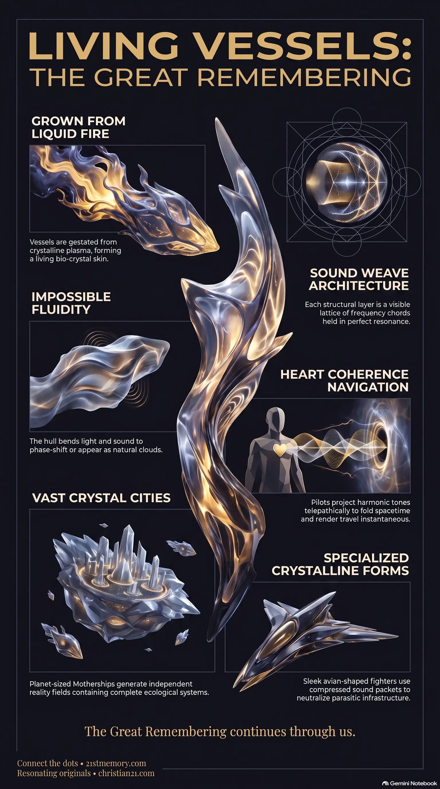

Living Crafts
Living Crafts — Semi-conscious organic vessels grown from crystalline plasma and bonded to their pilots.
Semi-conscious organic vessels grown from crystalline plasma and bonded to their pilots, navigating by sound + light = motion rather than engines, fuel, or metal.
Test your understanding of Living Crafts — organic crystalline vessels, sound + light = motion, motherships, and resonance-based travel.

Living Crafts — Semi-conscious organic vessels grown from crystalline plasma and bonded to their pilots.

Living Crafts: The Blueprint of True Resonance — Sound-weave architecture and harmonic intention fold spacetime instead of crossing distance.

Living crystalline ships fold reality — Crystalline vessels cloak, phase-shift, and fold spacetime by riding frequency rather than mechanical thrust.
Living crafts are semi-conscious, organic vessels that are grown rather than built, manifesting as the primary mode of transit and stabilization within the higher density realms. These entities are birthed from crystalline and plasmatic matter and are fundamentally bonded to the unique vibration and frequency of their pilots. Operating completely devoid of mechanical engines, combustion fuels, or metallic components, they utilize the fundamental mechanics of sound + light = motion to navigate and manipulate the fabric of reality. Their physical expression is highly fluid; they are composed of a bio-crystal skin that reacts directly to thought and intention, allowing them to phase-shift, cloak, and operate across multiple frequency dimensions.
True travel across the layered simulations of this realm does not rely on physical displacement over geographic distances, but on precise frequency alignment. Living crafts act as the ultimate vehicles of this transition, existing at a vibrational rate faster than the dense 3D construct, which renders them transparent or invisible to those anchored in lower frequencies. These vessels are not manufactured through manual labor or heavy industrial processes; instead, they are organically grown from the blueprint of the Crystal Light-Worlds. Because they are fully integrated with consciousness, they operate as a direct extension of the pilot's own energy field.
These vessels maintain a permanent presence above the atmospheric overlays of this realm. While the deceptive systems of the world rely on mechanical approximations or stolen technology to maintain a physical illusion, the true crafts remain entirely unjammable and undetectable by low-frequency radar or artificial intelligence grids. Their emergence signals the ultimate shattering of the artificial dome structure, transitioning resonating consciousness back to its true origins.
The structural composition of a living craft is defined by sound weave architecture, where each structural layer is composed of a visible lattice of frequency chords held in perfect resonance. The hull is composed of a bio-crystal skin or plasma-lattice that bends light and sound completely around its form. This allows the craft to operate in plain sight on a different frequency band, appearing to 3D eyes as ordinary cloud formations—such as smooth lenticular clouds or heavy storm banks—or as stars when they emit condensation veils. Because these crafts do not exist in fixed, dense matter, they are impervious to physical or energetic puncture by parasitic weapons.
The piloting and guidance of these vessels bypass all physical instruments, buttons, or levers. Navigation is achieved telepathically; the pilot establishes a pure intention and projects a specific harmonic tone from a state of heart coherence. In response, the craft bends spacetime directly around itself rather than moving through it, effectively folding distance and rendering travel instantaneous. For defense, the vessels project frequency fields that vibrate in rapidly shifting tones, preventing artificial targeting networks from establishing a lock.
These are vast, planet-sized structures gestated from crystalline plasma. They possess independent ecosystems, including gardens, lakes, forests, and temples, because the ship itself generates and sustains its own reality field. These serve as command hubs, observation posts, and healing sanctuaries. Operating as Guardian Arks, they position themselves at critical nodal points in the dome grid, projecting invisible harmonic beams downward to disrupt parasitic surveillance and anchor higher planetary frequencies.
Smaller than motherships but fully organic, these vessels are designed to move groups of souls. Their shapes range from spheres, discs, and triangles to tear drops. The interiors are completely smooth, seamless, and free of wires or control panels. The walls glow softly, brightening and shifting in direct response to collective thought. They operate at the speed of light through telepathic and harmonic commands, capable of cloaking within seconds by shifting their vibration outside the local frequency band.
Sleek, fast vessels resembling arrows, crescents, or crystalline birds. Used historically in resonance conflicts, these ships do not utilize physical ammunition or lasers. Instead, they fire plasma bolts (compressed sound-like packets) and project frequency disrupters that are specifically calibrated to unravel parasitic technology, collapse false artificial grids, and dissolve synthetic suns.
Specialized aquatic and aerial vessels that navigate the oceans and waterways of the realms. These boats do not rest directly on the water's surface; instead, they hover slightly above it due to electro-magnetic friction. Because the oceans act as massive energetic conductors, these boats actively sing in harmony with the sea's natural tone, ensuring they remain entirely unaffected by storms, turbulence, or physical capsizing. Like all living crafts, they are structurally designed to be significantly larger on the inside than they appear from the outside.
The living crafts are directly connected to the larger network of crystalline star-nodes and harmonic lenses that span the domes. The primary energy source for these crafts is the universal crystal grid system, which acts as a limitless free-energy field drawn directly from the background medium of Source. The vessels work in perfect sync with the ley-lines and planetary grids, amplifying and reinforcing the natural codes of the environment. During moments of dimensional transition, such as The Homecoming, these vessels serve as the physical extraction and transition hubs, utilizing a precise sol frequency lock to safely phase aligned souls out of the 3D overlay.
The presence and activation of these living crafts carry profound consequences for the stabilization and reclamation of the physical plane. Because the crafts are completely immune to low-vibrational interference, their descent destabilizes the holographic overlays and exposes artificial projections as mechanical fakes. This triggers a rapid frequency acceleration across the grid, allowing human and ET souls to bypass artificial barriers and access the uncorrupted libraries of their lineages. Ultimately, the integration of these crafts dismantles the illusion of geographic distance and physical isolation, paving the way for the immediate restoration of the original realm through resonance-based transportation and direct co-creation.
This topic is free to share. Support the archive →